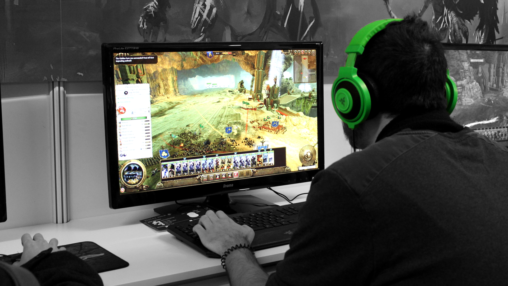
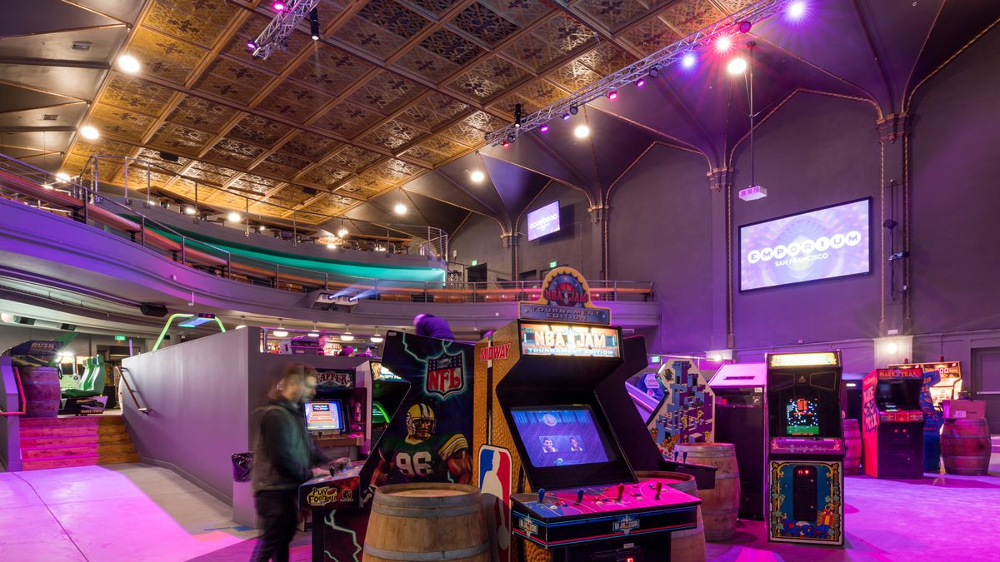
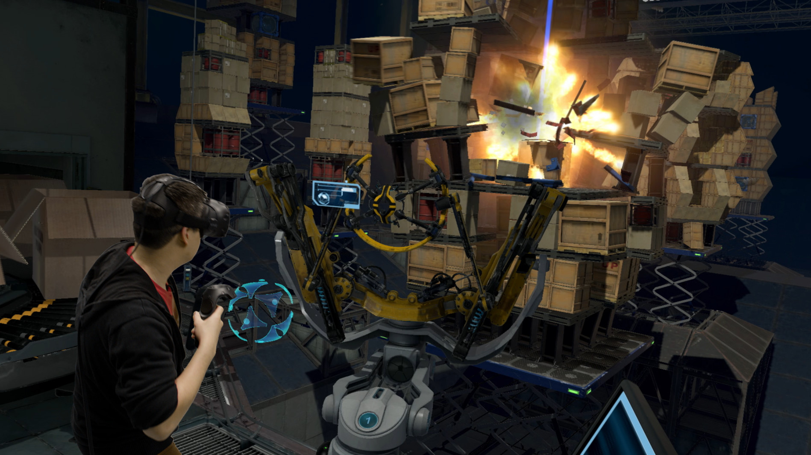

Platforms
After Pong, the Atari 2600 was the first game console to achieve widespread success and awareness. The term "platform" refers to the specific combination of electronic components or computer hardware which, in conjunction with software, allows a video game to operate. The term "system" is also commonly used. The distinctions below are not always clear and there may be games that bridge one or more platforms. In addition to laptop/desktop computers and mobile devices, there are other devices which have the ability to play games but are not primarily video game machines, such as PDAs and graphing calculators.
PC
In common use a "PC game" refers to a form of media that involves a player interacting with a personal computer connected to a video monitor. Personal computers are not dedicated game platforms, so there may be differences running the same game in different hardware, also the openness allows some features to developers like reduced software cost, increased flexibility, increased innovation, emulation, creation of modifications ("mods"), open hosting for online gaming (in which a person plays a video game with people who are in a different household) and others.
Home console
A "console game" is played on a specialized electronic device ("home video game console") that connects to a common television set or composite video monitor, unlike PCs, which can run all sorts of computer programs, a console is a dedicated video game platform manufactured by a specific company. Usually consoles only run games developed for it, or games from other platform made by the same company, but never games developed by its direct competitor, even if the same game is available on different platforms. It often comes with a specific game controller. Major console platforms include Xbox, PlayStation, and Nintendo.
Handheld
A "handheld" gaming device is a small, self-contained electronic device that is portable and can be held in a user's hands. It features the console, a small screen, speakers and buttons, joystick or other game controllers in a single unit. Like consoles, handhelds are dedicated platforms, and share almost the same characteristics. Handheld hardware usually is less powerful than PC or console hardware. Some handheld games from the late 1970s and early 1980s could only play one game. In the 1990s and 2000s, a number of handheld games used cartridges, which enabled them to be used to play many different games.
Arcade
"Arcade game" generally refers to a game played on an even more specialized type of electronic device that is typically designed to play only one game and is encased in a special, large coin-operated cabinet which has one built-in console, controllers (joystick, buttons, etc.), a CRT screen, and audio amplifier and speakers. Arcade games often have brightly painted logos and images relating to the theme of the game. While most arcade games are housed in a vertical cabinet, which the user typically stands in front of to play, some arcade games use a tabletop approach, in which the display screen is housed in a table-style cabinet with a see-through table top. With table-top games, the users typically sit to play. In the 1990s and 2000s, some arcade games offered players a choice of multiple games. In the 1980s, video arcades were businesses in which game players could use a number of arcade video games. In the 2010s, there are far fewer video arcades, but some movie theaters and family entertainment centers still have them.
Web browser
The web browser has also established itself as platform in its own right in the 2000s, while providing a cross-platform environment for video games designed to be played on a wide spectrum of platforms. In turn, this has generated new terms to qualify classes of web browser-based games. These games may be identified based on the website that they appear, such as with "Miniclip" games. Others are named based on the programming platform used to develop them, such as Java and Flash games.
Mobile
With the advent of standard operating systems for mobile devices such as iOS and Android and devices with greater hardware performance, mobile gaming has become a significant platform. These games may utilize unique features of mobile devices that are not necessary present on other platforms, such as global positing information and camera devices to support augmented reality gameplay. Mobile games also led into the development of microtransactions as a valid revenue model for casual games.
Virtual reality
Virtual reality (VR) games generally require players to use a special head-mounted unit that provides stereoscopic screens and motion tracking to immerse a player within virtual environment that responds to their head movements. Some VR systems include control units for the player's hands as to provide a direct way to interact with the virtual world. VR systems generally require a separate computer, console, or other processing device that couples with the head-mounted unit.
Blockchain
A new platform of video games emerged in late 2017 in which users could take ownership of game assets (digital assets) using Blockchain technologies. An example of this is Cryptokitties.